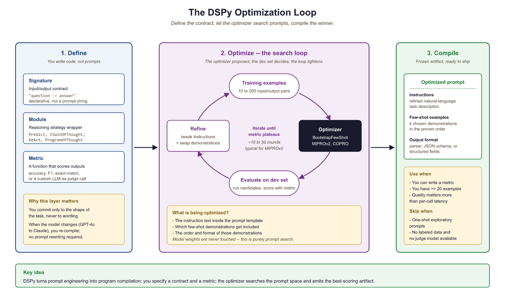

"Why write prompts by hand when you can write a program that writes better prompts than you ever could?"
Prompt, Meta-Prompting AI Agent
Manual prompt engineering does not scale. Hand-crafting prompts for individual tasks works for prototypes, but production systems serving hundreds of use cases across changing models require programmatic optimization. Automatic prompt engineering treats prompt construction as an optimization problem: given a task, a metric, and a set of training examples, find the prompt that maximizes performance. This section covers the major frameworks (DSPy, OPRO, TextGrad, EvoPrompt) that formalize this approach, as well as context engineering techniques (prompt compression, dynamic context assembly, MCP) that manage what information reaches the model. Together, these tools transform prompt engineering from an artisanal craft into a systematic, reproducible discipline.
Prerequisites
This section builds on the foundational prompt design from Section 11.1, chain-of-thought reasoning from Section 11.2, and the advanced prompt patterns (including DSPy introduction) from Section 11.3. Familiarity with RAG pipelines is helpful for understanding context engineering.
11.6.1 From Manual Craft to Programmatic Optimization
Manual prompt engineering has several fundamental limitations. Prompts that work well on GPT-4o may perform poorly on Claude or Gemini. Prompts optimized for one set of examples may not generalize to new data. And as systems grow more complex, maintaining dozens of hand-tuned prompts becomes a significant engineering burden.
Automatic prompt optimization addresses these issues by treating prompt design as a search problem. The core idea is simple: define a task metric (accuracy, F1 score, user satisfaction), provide a set of training examples with expected outputs, and use an optimization algorithm to search over the space of possible prompts to find one that maximizes the metric. The key insight is that the search space is text (not continuous parameters), so the optimization algorithms must work with discrete, natural language modifications.
Automatic prompt optimization inverts the traditional ML workflow. In classical ML, you fix the program (model architecture) and optimize the parameters (weights). In automatic prompt engineering, you fix the parameters (the frozen LLM weights) and optimize the program (the prompt text). This is why DSPy calls its approach "programming, not prompting": the prompt is the program, and the optimizer is the compiler.
Researchers have found that adding the phrase "Take a deep breath and work through this step by step" to prompts improves math reasoning accuracy. No one designed this phrase through systematic analysis. An LLM-based optimizer (OPRO) discovered it by trying thousands of variations and keeping whatever worked. The phrase has no logical reason to improve mathematical reasoning, yet it does, consistently. This is why we need automatic optimization: human intuition about what makes a good prompt is unreliable.
Automatic prompt optimizers can overfit to the training examples just as surely as neural networks overfit to small datasets. If you optimize a prompt on 20 examples, the resulting prompt may include narrow patterns that work for those 20 examples but fail on new inputs. Always hold out a separate test set that the optimizer never sees, and evaluate the optimized prompt on that test set before deploying. For DSPy, this means using a train/dev/test split where the optimizer uses train+dev and final performance is measured on test only.

11.6.2 DSPy: Declarative Prompting with Optimizers
DSPy (Khattab et al., 2024) is the most comprehensive framework for automatic prompt optimization. It introduces a programming model where you declare what you want the LLM to do (as a signature specifying inputs and outputs) and let an optimizer figure out how to prompt the model to achieve it. This separates the task specification from the prompt implementation, making systems portable across models.
A DSPy program consists of three components: Signatures define the input-output contract (e.g., "question, context to answer"), Modules implement reasoning patterns (ChainOfThought, ReAct, ProgramOfThought), and Optimizers (called "teleprompters") tune the prompts and few-shot examples to maximize a metric. The optimizer evaluates the program on training examples, identifies which components need improvement, and iteratively refines the prompt instructions and selected demonstrations.
# DSPy: Declarative prompt optimization
import dspy
# Configure the language model
lm = dspy.LM("openai/gpt-4o-mini")
dspy.configure(lm=lm)
# Define a signature: inputs and outputs
class AnswerQuestion(dspy.Signature):
"""Answer a factual question using the provided context."""
context: str = dspy.InputField(desc="relevant passages from the knowledge base")
question: str = dspy.InputField(desc="the user's question")
answer: str = dspy.OutputField(desc="a concise, factual answer")
# Create a module that uses chain-of-thought reasoning
cot_qa = dspy.ChainOfThought(AnswerQuestion)
# Use the module (before optimization)
result = cot_qa(
context="The Eiffel Tower was completed in 1889 for the World's Fair.",
question="When was the Eiffel Tower built?"
)
print(f"Answer: {result.answer}")
# Now optimize with MIPROv2
from dspy.teleprompt import MIPROv2
# Define a metric function
def answer_accuracy(example, prediction, trace=None):
"""Check if the predicted answer matches the expected answer."""
return prediction.answer.lower().strip() == example.answer.lower().strip()
# Provide training examples
trainset = [
dspy.Example(
context="Python was created by Guido van Rossum in 1991.",
question="Who created Python?",
answer="Guido van Rossum"
).with_inputs("context", "question"),
dspy.Example(
context="The speed of light is approximately 299,792,458 m/s.",
question="What is the speed of light?",
answer="approximately 299,792,458 m/s"
).with_inputs("context", "question"),
# ... more training examples
]
# Run the optimizer
optimizer = MIPROv2(metric=answer_accuracy, num_threads=4)
optimized_qa = optimizer.compile(cot_qa, trainset=trainset)
# The optimized module has tuned instructions and selected demonstrations
print("Optimized prompt instructions:")
print(optimized_qa.predict.signature.instructions)DSPy's key optimizers include: BootstrapFewShot, which selects and orders the best few-shot demonstrations from a training set; MIPROv2 (Multi-prompt Instruction Proposal Optimizer), which jointly optimizes instructions and demonstrations using Bayesian search; and BootstrapFewShotWithRandomSearch, which combines demonstration selection with random perturbations to the prompt structure. MIPROv2 is generally the recommended starting point because it optimizes both the instruction text and the example selection simultaneously.
DSPy's most powerful feature is model portability. Because the task is defined declaratively (through Signatures and Modules), switching from GPT-4o to Claude to Gemini requires only changing the model configuration and re-running the optimizer. The optimizer will find the best prompt formulation for each model independently. This eliminates the common problem of prompts that are tuned for one model breaking when you switch providers, and it makes A/B testing across models straightforward.
11.6.3 OPRO: LLM-Based Prompt Optimization
OPRO (Optimization by PROmpting, Yang et al. 2024) takes a conceptually elegant approach: use an LLM to optimize prompts for another LLM (or the same LLM). The optimizer LLM receives a "meta-prompt" containing the task description, previously tried prompts, and their scores on an evaluation set. It then generates new candidate prompts, which are evaluated on the task, and the results feed back into the meta-prompt. Over multiple iterations, the optimizer converges on high-performing prompts.
The OPRO workflow is straightforward: (1) start with an initial prompt (which can be empty or a human-written draft), (2) evaluate the prompt on a validation set, (3) present the optimizer LLM with the prompt history and scores, (4) the optimizer generates new candidate prompts, (5) evaluate the candidates and add them to the history, (6) repeat until convergence or a budget limit is reached. The meta-prompt instructs the optimizer to analyze patterns in successful versus unsuccessful prompts and generate improvements.
# OPRO-style prompt optimization (simplified implementation)
from openai import OpenAI
import json
client = OpenAI()
def evaluate_prompt(prompt: str, eval_set: list) -> float:
"""Evaluate a prompt on the evaluation set, returning accuracy."""
correct = 0
for example in eval_set:
response = client.chat.completions.create(
model="gpt-4o-mini",
messages=[
{"role": "system", "content": prompt},
{"role": "user", "content": example["input"]},
],
)
predicted = response.choices[0].message.content.strip()
if example["expected"].lower() in predicted.lower():
correct += 1
return correct / len(eval_set)
def opro_optimize(task_desc: str, eval_set: list, n_iterations: int = 10) -> str:
"""Use an LLM to iteratively optimize a prompt."""
history = []
# Start with a basic prompt
current_prompt = f"You are a helpful assistant. {task_desc}"
score = evaluate_prompt(current_prompt, eval_set)
history.append({"prompt": current_prompt, "score": score})
for i in range(n_iterations):
# Build the meta-prompt with history
history_text = "\n".join([
f"Prompt: {h['prompt']}\nScore: {h['score']:.2f}"
for h in sorted(history, key=lambda x: x["score"])[-10:]
])
# Ask the optimizer LLM to generate a better prompt
response = client.chat.completions.create(
model="gpt-4o",
messages=[
{"role": "system", "content": """You are a prompt optimization expert.
Analyze the history of prompts and their scores below. Generate a new prompt
that will score higher. Focus on what patterns made high-scoring prompts
succeed and low-scoring prompts fail. Return ONLY the new prompt text."""},
{"role": "user", "content": f"Task: {task_desc}\n\n"
f"Previous attempts (sorted by score):\n{history_text}\n\n"
f"Generate an improved prompt:"},
],
)
new_prompt = response.choices[0].message.content.strip()
new_score = evaluate_prompt(new_prompt, eval_set)
history.append({"prompt": new_prompt, "score": new_score})
print(f"Iteration {i+1}: score={new_score:.2f}")
# Return the best prompt
best = max(history, key=lambda x: x["score"])
return best["prompt"]
# Example usage
best_prompt = opro_optimize(
task_desc="Classify customer emails as positive, negative, or neutral sentiment.",
eval_set=[
{"input": "Great product, love it!", "expected": "positive"},
{"input": "Terrible service, never again.", "expected": "negative"},
{"input": "Order arrived on Tuesday.", "expected": "neutral"},
# ... more examples
],
n_iterations=5
)11.6.4 TextGrad and Gradient-Based Text Optimization
TextGrad (Yuksekgonul et al., 2024) brings the concept of backpropagation to text optimization. In numerical deep learning, gradients indicate how to adjust parameters to reduce loss. TextGrad computes "textual gradients": natural language feedback that describes how to modify a text to improve a given objective. The LLM serves as both the function being optimized and the source of gradient information.
The workflow is analogous to numerical optimization: (1) a forward pass generates an output from the current prompt, (2) a loss function evaluates the output quality, (3) a backward pass generates textual feedback describing how to improve the prompt, and (4) an update step applies the feedback to produce a new prompt version. This process repeats until the output quality converges.
TextGrad's advantage is generality: it can optimize any text variable in a compound system, not just the prompt instruction. It can simultaneously tune the system prompt, few-shot examples, output format specification, and even the retrieval query in a RAG pipeline. This makes it suitable for optimizing complex, multi-component LLM systems where multiple text variables interact.
11.6.5 EvoPrompt: Evolutionary Prompt Search
EvoPrompt (Guo et al., 2024) applies evolutionary algorithms to prompt optimization. Starting with a population of prompt candidates (which can be human-written or randomly generated), the algorithm uses selection, crossover, and mutation operations to evolve prompts over multiple generations. Selection keeps the highest-scoring prompts; crossover combines elements from two successful prompts; and mutation introduces random variations through LLM-powered paraphrasing.
The evolutionary approach has several advantages. It maintains diversity in the prompt population, reducing the risk of converging on a local optimum. It can discover non-obvious prompt formulations that neither humans nor gradient-based methods would produce. And it is embarrassingly parallel: each candidate in the population can be evaluated independently, making it efficient to run on modern hardware.
| Framework | Approach | Optimizes | Requires | Best For |
|---|---|---|---|---|
| DSPy (MIPROv2) | Bayesian + bootstrap | Instructions + demonstrations | Training set + metric | Multi-step pipelines, model portability |
| OPRO | LLM-as-optimizer | Instruction text | Eval set + scorer | Single-prompt tasks, low setup |
| TextGrad | Textual backpropagation | Any text variable | Differentiable loss | Complex multi-variable systems |
| EvoPrompt | Evolutionary algorithms | Full prompt text | Population + fitness function | Diverse search, avoiding local optima |
11.6.6 Prompt Compression: LLMLingua and LongLLMLingua
As context windows grow and RAG systems retrieve increasing amounts of context, managing what fits within the model's attention becomes critical. Prompt compression reduces the token count of prompts and retrieved contexts while preserving the information needed for accurate responses.
LLMLingua (Jiang et al., 2023) uses a small language model (such as GPT-2 or LLaMA-7B) to identify and remove tokens that contribute least to the prompt's information content. The approach computes the perplexity contribution of each token and removes those with the lowest information density. This can achieve 2x to 20x compression ratios with minimal quality loss, depending on the redundancy of the original text.
LongLLMLingua extends this approach specifically for RAG scenarios where long retrieved contexts need compression. It adds document-level relevance estimation (prioritizing passages most relevant to the query), a "contrastive perplexity" metric that preserves query-relevant tokens, and a dynamic compression ratio that applies more aggressive compression to less relevant passages. This makes it particularly effective for reducing the cost and latency of RAG systems while maintaining answer quality.
# Prompt compression with LLMLingua
# Install: pip install llmlingua
from llmlingua import PromptCompressor
# Initialize the compressor with a small model
compressor = PromptCompressor(
model_name="microsoft/llmlingua-2-bert-base-multilingual-cased-meetingbank",
use_llmlingua2=True,
)
# Example: compress a long RAG context
original_context = """
The transformer architecture was introduced in the seminal paper 'Attention Is All
You Need' by Vaswani et al. in 2017. The key innovation was the self-attention
mechanism, which allows the model to weigh the importance of different parts of
the input sequence when producing each output element. This replaced the recurrent
connections used in previous sequence-to-sequence models like LSTMs and GRUs.
The original transformer used an encoder-decoder architecture with multi-head
attention layers. The encoder processes the input sequence in parallel (unlike
RNNs which process sequentially), and the decoder generates the output sequence
one token at a time, attending to both the encoder output and previously generated
tokens. Position information is injected through sinusoidal positional encodings.
Subsequent work showed that using only the decoder (GPT series) or only the encoder
(BERT) could achieve strong results on generation and understanding tasks respectively.
The scaling laws discovered by Kaplan et al. (2020) demonstrated that model performance
improves predictably with increases in model size, dataset size, and compute budget.
"""
question = "What is the key innovation of the transformer architecture?"
# Compress the context
compressed = compressor.compress_prompt(
context=[original_context],
instruction="",
question=question,
rate=0.5, # target 50% compression
)
print(f"Original tokens: {compressed['origin_tokens']}")
print(f"Compressed tokens: {compressed['compressed_tokens']}")
print(f"Compression ratio: {compressed['ratio']:.1f}x")
print(f"Compressed text: {compressed['compressed_prompt']}")11.6.7 Context Engineering: MCP and Dynamic Context Assembly
Context engineering is the practice of dynamically assembling the right information to include in each LLM call. While prompt engineering focuses on how to instruct the model, context engineering focuses on what information the model needs to see. This is especially important for agent systems and complex applications where the relevant context changes with every interaction.
The Model Context Protocol (MCP), introduced by Anthropic, standardizes how applications provide context to language models. MCP defines a protocol through which tools, data sources, and context providers expose information to the model in a structured way. Rather than hardcoding context retrieval into the prompt template, MCP allows the model to request specific context from registered providers at runtime. This creates a clean separation between the model's reasoning and the context supply chain. MCP is covered in detail in Chapter 23.
Dynamic context assembly involves selecting, filtering, and ordering context at inference time based on the current query. A well-designed context assembly pipeline: (1) retrieves candidate context from multiple sources (vector stores, knowledge graphs, APIs, conversation history), (2) ranks candidates by relevance to the current query, (3) applies compression to fit within the context window budget, (4) orders the context to place the most important information in positions where the model attends most strongly (typically the beginning and end of the context), and (5) adds structural markers (headers, separators) that help the model parse the assembled context.
11.6.8 When to Use Automatic vs. Manual Prompt Engineering
Automatic prompt optimization is not always the right choice. The decision depends on the task complexity, the number of use cases, and the available evaluation data.
Use manual prompt engineering when: you are prototyping a new application and the task definition is still evolving; you have fewer than 20 evaluation examples; the task requires nuanced judgment that is difficult to capture in a metric; or you need full control over the prompt for regulatory or compliance reasons (some regulated industries require that all prompts be human-reviewed and approved).
Use automatic prompt optimization when: you have a stable task definition with a clear metric; you have at least 50 to 100 labeled examples for optimization (and a held-out test set for evaluation); you need to support multiple models or model versions; you are maintaining many prompts and manual tuning does not scale; or you observe that small prompt variations cause large performance swings (indicating that the current prompt is not robust).
Use prompt compression when: your RAG system retrieves more context than fits in the model's context window; you are paying per token and context is a significant cost driver; or you observe that longer contexts are degrading answer quality (the "lost in the middle" problem, where models struggle to use information in the middle of long contexts).
Automatic prompt optimization can overfit to the training set, just like any machine learning process. Always evaluate optimized prompts on a held-out test set that was not used during optimization. Watch for prompts that achieve high training accuracy through shortcuts (such as exploiting spurious correlations in the training data) rather than genuine task understanding. DSPy's approach of optimizing both instructions and few-shot demonstrations is particularly susceptible to overfitting when the training set is small, so use at least 50 examples and validate on at least 20 held-out examples.
Show Answer
Show Answer
Show Answer
Show Answer
Show Answer
- Automatic prompt optimization treats prompt design as a search problem, finding prompts that maximize task metrics rather than relying on human intuition.
- DSPy provides a declarative programming model with Signatures, Modules, and Optimizers that separates task specification from prompt implementation.
- OPRO uses an LLM as the optimizer, generating improved prompt candidates based on evaluation history.
- TextGrad computes "textual gradients" for optimizing any text variable in a compound LLM system.
- EvoPrompt applies evolutionary algorithms to maintain diverse prompt populations and avoid local optima.
- Prompt compression (LLMLingua, LongLLMLingua) reduces token counts while preserving task-relevant information, enabling cost and latency savings.
- Context engineering with MCP and dynamic assembly ensures the model receives the right information for each call.
- Choose manual vs. automatic based on task stability, evaluation data availability, and regulatory constraints.
Prompt optimization is converging with agent design. DSPy's latest work treats entire agent pipelines (retrieval, reasoning, tool use, output generation) as optimizable programs, where each component's prompt is jointly tuned. This blurs the line between prompt engineering and program synthesis: the optimizer discovers not just better prompts but better reasoning strategies.
Separately, context engineering is evolving toward "context operating systems" where models manage their own context windows, deciding what to keep, compress, or retrieve based on the current task. The combination of automatic prompt optimization and intelligent context management may eventually make manual prompt engineering obsolete for most production applications.
Lab: Pretrain a Tiny Language Model
Objective
Train a 10M-parameter GPT-style language model from scratch on a small text corpus using raw PyTorch, then replicate the same training loop in 15 lines with the HuggingFace Trainer API to appreciate what the library abstracts away.
What You'll Practice
- Defining a minimal GPT architecture (embeddings, transformer blocks, LM head)
- Writing a training loop with cross-entropy loss and gradient clipping
- Monitoring training loss and generating sample completions
- Using the HuggingFace Trainer to replace the manual loop
Setup
A CUDA GPU is recommended but not strictly required. Training on CPU will be significantly slower (expect 20+ minutes per epoch).
pip install torch transformers datasetsSteps
Step 1: Define a tiny GPT model
Build a small transformer with 6 layers, 6 heads, and an embedding dimension of 192, totaling roughly 10M parameters.
# Define a tiny GPT model (~10M params) for training experiments.
# Uses 6 layers, 6 attention heads, and 192-dim embeddings.
import torch
import torch.nn as nn
from transformers import GPT2Tokenizer
tokenizer = GPT2Tokenizer.from_pretrained("gpt2")
tokenizer.pad_token = tokenizer.eos_token
vocab_size = tokenizer.vocab_size
class TinyGPTConfig:
vocab_size = vocab_size
n_layer = 6
n_head = 6
n_embd = 192
block_size = 256
dropout = 0.1
class TinyGPT(nn.Module):
def __init__(self, config):
super().__init__()
self.config = config
self.token_emb = nn.Embedding(config.vocab_size, config.n_embd)
self.pos_emb = nn.Embedding(config.block_size, config.n_embd)
self.drop = nn.Dropout(config.dropout)
layer = nn.TransformerEncoderLayer(
d_model=config.n_embd, nhead=config.n_head,
dim_feedforward=config.n_embd * 4, dropout=config.dropout,
activation="gelu", batch_first=True, norm_first=True
)
self.transformer = nn.TransformerEncoder(layer, num_layers=config.n_layer)
self.ln_f = nn.LayerNorm(config.n_embd)
self.lm_head = nn.Linear(config.n_embd, config.vocab_size, bias=False)
# Weight tying
self.lm_head.weight = self.token_emb.weight
n_params = sum(p.numel() for p in self.parameters())
print(f"Model parameters: {n_params:,} ({n_params/1e6:.1f}M)")
def forward(self, input_ids, labels=None):
B, T = input_ids.shape
positions = torch.arange(T, device=input_ids.device).unsqueeze(0)
x = self.drop(self.token_emb(input_ids) + self.pos_emb(positions))
# Causal mask
mask = nn.Transformer.generate_square_subsequent_mask(T, device=input_ids.device)
x = self.transformer(x, mask=mask, is_causal=True)
x = self.ln_f(x)
logits = self.lm_head(x)
loss = None
if labels is not None:
loss = nn.functional.cross_entropy(
logits[:, :-1].contiguous().view(-1, logits.size(-1)),
labels[:, 1:].contiguous().view(-1)
)
return logits, loss
config = TinyGPTConfig()
model = TinyGPT(config)Hint
Weight tying (sharing the token embedding matrix with the LM head) reduces parameter count by almost half and improves training stability. This is standard practice in modern language models.
Step 2: Prepare data and train with a manual loop
Load a small corpus, tokenize it into chunks, and run a training loop with AdamW and gradient clipping.
# Load WikiText-2, tokenize into fixed-length chunks, and train
# with AdamW optimizer plus gradient clipping for stability.
from datasets import load_dataset
from torch.utils.data import DataLoader
# Load and tokenize data
ds = load_dataset("wikitext", "wikitext-2-raw-v1", split="train")
ds = ds.filter(lambda x: len(x["text"].strip()) > 50)
def tokenize_fn(examples):
tokens = tokenizer(examples["text"], truncation=False)["input_ids"]
all_tok = [t for doc in tokens for t in doc]
bs = config.block_size
chunks = [all_tok[i:i+bs] for i in range(0, len(all_tok)-bs+1, bs)]
return {"input_ids": chunks}
tok_ds = ds.map(tokenize_fn, batched=True, remove_columns=["text"])
tok_ds.set_format("torch")
loader = DataLoader(tok_ds, batch_size=16, shuffle=True)
# Training loop
device = "cuda" if torch.cuda.is_available() else "cpu"
model = model.to(device)
optimizer = torch.optim.AdamW(model.parameters(), lr=3e-4, weight_decay=0.01)
model.train()
for epoch in range(2):
total_loss, steps = 0.0, 0
for batch in loader:
ids = batch["input_ids"].to(device)
_, loss = model(ids, labels=ids)
optimizer.zero_grad()
loss.backward()
torch.nn.utils.clip_grad_norm_(model.parameters(), 1.0)
optimizer.step()
total_loss += loss.item()
steps += 1
if steps % 50 == 0:
print(f"Epoch {epoch+1}, Step {steps}, Loss: {total_loss/steps:.4f}")
print(f"Epoch {epoch+1} complete. Avg loss: {total_loss/steps:.4f}")Hint
Gradient clipping (max norm of 1.0) prevents training instability from occasional large gradients. Watch for the loss to decrease from around 10 (random predictions over 50k vocab) down toward 4-5 after a couple of epochs.
Step 3: Generate sample text
Use the trained model to generate text and see what it has learned.
# Generate text from the trained model using temperature sampling.
# Demonstrates autoregressive decoding: predict one token at a time.
model.eval()
def generate(prompt, max_tokens=100, temperature=0.8):
ids = tokenizer.encode(prompt, return_tensors="pt").to(device)
for _ in range(max_tokens):
with torch.no_grad():
logits, _ = model(ids)
logits = logits[:, -1, :] / temperature
probs = torch.softmax(logits, dim=-1)
next_tok = torch.multinomial(probs, num_samples=1)
ids = torch.cat([ids, next_tok], dim=-1)
if ids.shape[1] > config.block_size:
ids = ids[:, -config.block_size:]
return tokenizer.decode(ids[0], skip_special_tokens=True)
print("=== Generated Samples ===")
for p in ["The history of", "In recent years", "Scientists discovered"]:
print(f"\nPrompt: {p}")
print(generate(p))Hint
A 10M-parameter model trained on WikiText-2 will not produce fluent prose, but you should see it learn basic English word patterns and grammar. The quality gap compared to GPT-2 (124M, trained on much more data) illustrates why scale matters.
Step 4: The library shortcut with HuggingFace Trainer
Replace the entire manual loop with the Trainer API in about 15 lines.
# Library shortcut: replace the entire manual training loop with
# HuggingFace Trainer in ~15 lines. Handles batching, logging, checkpoints.
from transformers import Trainer, TrainingArguments, GPT2Config, GPT2LMHeadModel
from transformers import DataCollatorForLanguageModeling
# Define model using HuggingFace config
hf_config = GPT2Config(
vocab_size=vocab_size, n_layer=6, n_head=6, n_embd=192, n_positions=256
)
hf_model = GPT2LMHeadModel(hf_config)
collator = DataCollatorForLanguageModeling(tokenizer=tokenizer, mlm=False)
args = TrainingArguments(
output_dir="./tiny-gpt-hf", num_train_epochs=2,
per_device_train_batch_size=16, learning_rate=3e-4,
logging_steps=50, save_strategy="no", report_to="none",
gradient_accumulation_steps=1, max_grad_norm=1.0,
)
trainer = Trainer(
model=hf_model, args=args,
train_dataset=tok_ds, data_collator=collator,
)
trainer.train()
print("Trainer finished. Final loss:", trainer.state.log_history[-1].get("train_loss"))Hint
The Trainer handles the training loop, gradient accumulation, clipping, logging, checkpointing, and distributed training. For research prototyping, the manual loop gives more control; for production training, the Trainer saves significant engineering effort.
Expected Output
- A ~10M parameter model that fits easily on a single GPU (or runs on CPU)
- Training loss decreasing from ~10 to ~4-5 over 2 epochs
- Generated text showing basic English patterns (not fluent, but clearly learned structure)
- Identical training behavior from the Trainer API with far less code
Stretch Goals
- Add a cosine learning rate scheduler and compare final loss
- Double the model size (12 layers, 384 embedding dim) and measure how loss improves
- Implement a simple evaluation loop that computes perplexity on the validation split
What's Next?
This completes our coverage of prompt engineering techniques. In the next chapter, Chapter 12: Hybrid ML and LLM Systems, we explore frameworks for deciding when to use classical ML, LLMs, or a hybrid approach, and how to combine them effectively.
References
Khattab, O., Singhvi, A., Maheshwari, P., et al. (2024). "DSPy: Compiling Declarative Language Model Calls into State-of-the-Art Pipelines." arXiv:2310.03714
Introduces the DSPy framework for declarative prompt programming with automatic optimization. Demonstrates how separating task specification from prompt implementation enables model portability and systematic optimization. The foundational reference for production prompt optimization.
Yang, C., Wang, X., Lu, Y., et al. (2024). "Large Language Models as Optimizers." arXiv:2309.03409
Introduces OPRO, using LLMs to optimize prompts through iterative refinement based on evaluation feedback. Shows that LLM-based optimization can discover non-obvious prompt formulations that outperform human-designed prompts. Essential for understanding the LLM-as-optimizer paradigm.
Yuksekgonul, M., Bianchi, F., Boen, J., et al. (2024). "TextGrad: Automatic 'Differentiation' via Text." arXiv:2406.07496
Introduces textual backpropagation for optimizing any text variable in an LLM pipeline. Demonstrates that the gradient metaphor can be applied to discrete text optimization with strong results. Useful for teams building complex multi-component LLM systems.
Guo, Q., Wang, R., Guo, J., et al. (2024). "Connecting Large Language Models with Evolutionary Algorithms Yields Powerful Prompt Optimizers." arXiv:2309.08532
Introduces EvoPrompt, applying evolutionary algorithms (crossover, mutation, selection) to prompt optimization. Demonstrates that maintaining population diversity leads to more robust prompts compared to greedy optimization. Valuable for understanding alternative optimization strategies.
Jiang, H., Wu, Q., Lin, C.-Y., et al. (2023). "LLMLingua: Compressing Prompts for Accelerated Inference of Large Language Models." arXiv:2310.05736
Introduces prompt compression using a small language model to remove low-information tokens. Achieves 2x to 20x compression with minimal quality loss. Essential for teams building cost-efficient RAG systems or working with limited context windows.
Jiang, H., Wu, Q., Luo, X., et al. (2023). "LongLLMLingua: Accelerating and Enhancing LLMs in Long Context Scenarios via Prompt Compression." arXiv:2310.06839
Extends LLMLingua for RAG scenarios with document-level relevance estimation and contrastive perplexity. Shows improved results on long-context QA tasks. Recommended for teams whose RAG retrievers return more context than the model can effectively use.